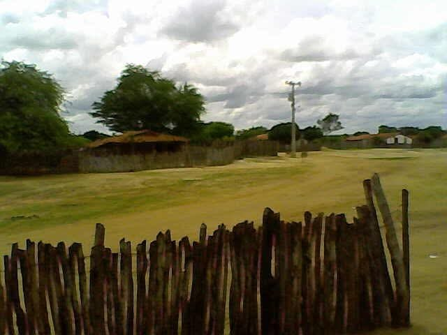
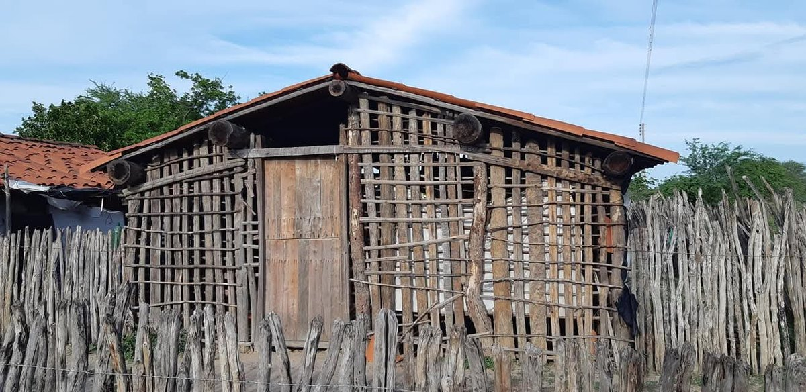

Em construção. Esta fase será ampliada à medida que Luciana gravar novos relatos.
Francisca Luciana da Silva nasceu em 30 de junho de 1964, ano do golpe militar, no Alto do Peru, localidade do vilarejo de Córrego do Machado, em Jaguaruana, no Vale do Jaguaribe, interior do Ceará. A mãe, Albertina, tinha 16 anos à época do nascimento e partiu pouco depois para Fortaleza, onde trabalhou em casas de família e de onde enviava parte do que ganhava para o sustento da filha.

Jaguaruana é conhecida como a Terra da Rede de Dormir. A fabricação de redes, em teares manuais e mecânicos, sustenta até hoje a economia do município, ao lado de cobertores, mantas e tapetes. A produção é coletiva: o tecido central sai dos teares e segue para várias casas, onde diferentes famílias fazem as grades, os punhos e as varandas. Nas ruas da cidade e dos povoados, é comum ver redes expostas à venda nas portas ou em plena confecção.
A região é rica também em carnaúba, palmeira da qual se extrai a cera usada no polimento de pisos e na composição de batons, e cuja palha se transforma em vassouras, chapéus e artesanato. As mulheres da família de Luciana trabalharam na confecção de chapéus, vassouras e bonecas de palha, foram lavadeiras de profissão e cultivaram algodão nas roças.
A avó, Nazaré, tinha feições marcantes: rosto longo, traços graúdos, beleza reconhecida na juventude. Relatos da família sugerem ascendência portuguesa, sem confirmação documental. Casou-se, teve o filho Pedro e mudou-se para Mossoró, no Rio Grande do Norte. O casamento não se manteve, e ela voltou a Jaguaruana, onde passou a trabalhar como lavadeira e criou o filho.
Foi essa avó quem criou Luciana, com o apoio das tias Graça e Socorro. Mesmo diante da alternância entre a seca e as cheias, que com frequência destruíam as plantações e dizimavam os animais, as três mulheres garantiram à menina alimentação diária e um ambiente de afeto, que Luciana guarda como um tempo de liberdade e felicidade.
